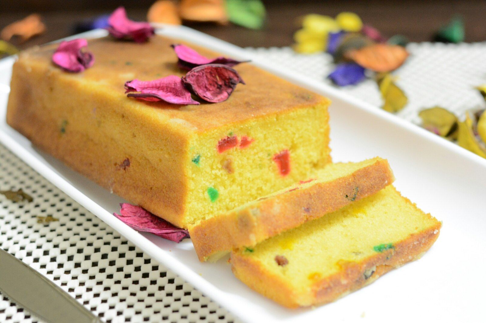

Tutti Frutti cake
Ingredients
- ¾ cup 190 grams curd / yogurt
- ¾ cup 170 grams sugar
- 1 tsp vanilla extract
- ½ cup 100 grams oil
- <1½ cup 260 grams maida / plain flour / refined flour / all purpose flour/li>
- ¼ tsp baking soda
- 1 tsp baking powder
- ¼ cup water
- ¼ cup 60 grams tutti frutti
Preparation
- firstly, in a large mixing bowl take ¾ cup curd, ¾ cup sugar, ½ cup oil and 1 tsp vanilla extract.
- mix well with the help of whisk.
- further sieve 1½ cup maida, ¼ tsp baking soda and 1 tsp baking powder.
- mix well using cut and fold method.
- further add ¼ cup water and mix well forming thick flowing consistency batter.
- add in ¼ cup of tutti frutti and give a good mix.
- further, transfer the cake batter into the cake mould or bread mould (width: 12 cm, height: 6 cm, length: 26 cm). make sure to grease the mould with butter to avoid sticking and line butter paper at bottom of tray.
- level up the batter and pat the tray twice to remove the air incorporated into the batter.
- place the cake tray into preheated oven. bake the cake at 180 degree celsius or 356 degree fahrenheit for 30-40 minutes.
- finally, serve the tutti frutti cake or store in airtight container.